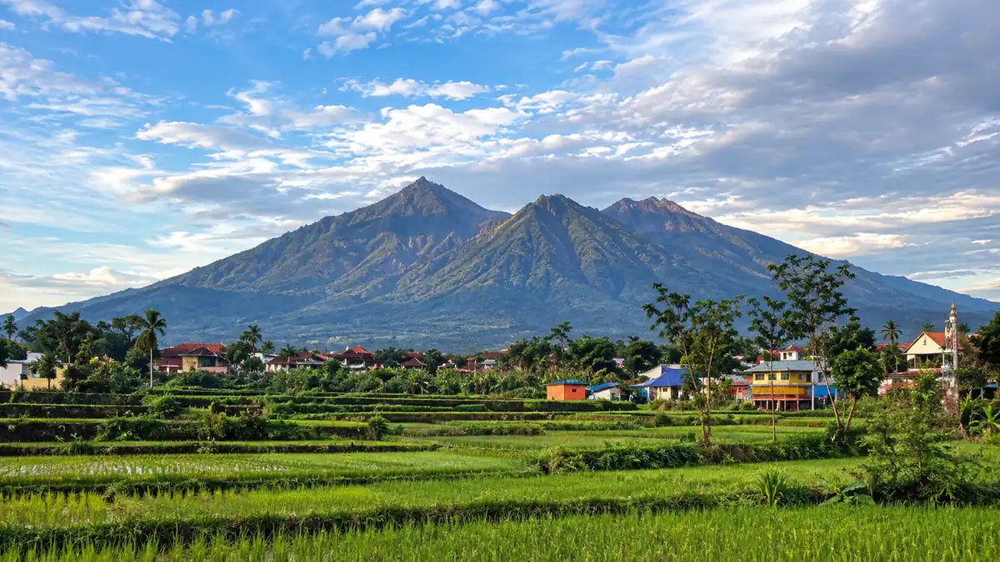
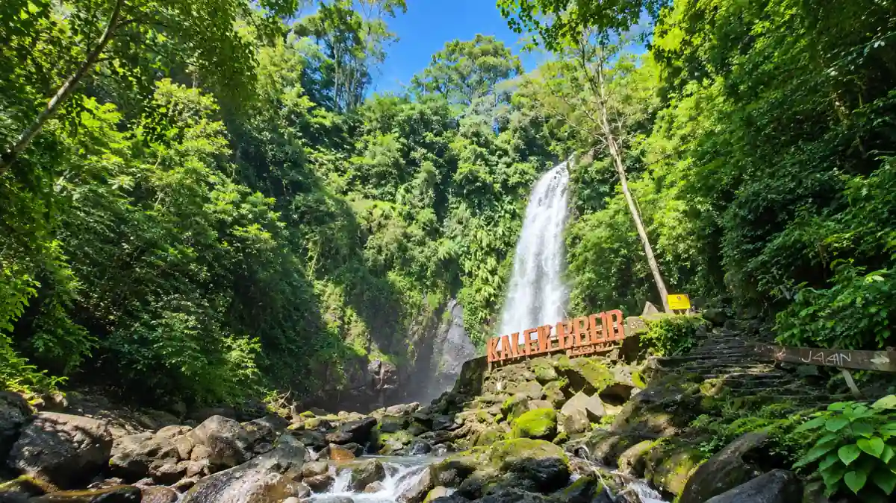

Ilustrasi Kawasan wisata Tretes di Kecamatan Prigen, Kabupaten Pasuruan destinasi pegunungan sejuk yang populer di Jawa Timur.Wisata Tretes adalah paket destinasi pegunungan di Kecamatan Prigen, Kabupaten Pasuruan, berisi air terjun, hotel, kuliner, dan lokasi gathering bersuhu sejuk sepanjang tahun.
- Wisata Tretes Itu Daerah Mana?
- Rute Menuju Tretes dari Malang dan Surabaya
- Jumlah Wisatawan yang Datang ke Pasuruan
- Wisata Alam di Tretes yang Layak Dikunjungi
- Destinasi Wisata Edukasi dan Safari Kekinian di Prigen
- Cafe Romantis Tretes Berpemandangan Gemerlap Kota
- Sentra Kuliner Malam Tretes
- Cuaca dan Waktu Terbaik Berwisata ke Tretes
- Pilihan Hotel dan Penginapan di Tretes
- Mengapa Wisata Tretes Cocok untuk Outbound dan Corporate Gathering
- Apa yang Bisa Ditawarkan Batu Camping untuk Acara Rombongan
- Kesalahan Umum saat Berwisata ke Tretes
- Cara Menyusun Rencana Wisata Tretes yang Lancar
- Kesimpulan
Wisata Tretes Itu Daerah Mana, Malang, Mojokerto, atau Pasuruan?
Tretes berada di Kecamatan Prigen, Kabupaten Pasuruan, Jawa Timur, bukan di Malang maupun Mojokerto, meski ketiga wilayah itu bertetangga dan terhubung jalur wisata.
Banyak orang mengetik “tretes malang” atau “tretes mojokerto” karena ketiga daerah tersebut saling berdekatan dan sering muncul dalam satu rute liburan Jawa Timur.
Kebingungan itu wajar, tetapi alamat administratifnya tetap satu, yaitu Prigen, Pasuruan. Malang dan Tretes dihubungkan jalur darat yang cukup mudah. Waktu tempuh dapat bervariasi tergantung kepadatan lalu lintas, terutama pada akhir pekan dan musim libur.
Prigen, Pasuruan, sedangkan kawasan Trawas yang berdekatan masuk Kabupaten Mojokerto. Wisatawan sering menggabungkan Tretes dengan Trawas dalam satu perjalanan karena karakter udaranya sama-sama sejuk. Penggabungan itu praktis, tetapi pemesanan penginapan sebaiknya mengikuti lokasi acara utama.
Bagaimana Rute Menuju Tretes dari Malang dan Surabaya?
Wisatawan dari Malang dan Surabaya umumnya menuju Tretes lewat Pandaan, lalu naik ke Prigen, sementara jalur alternatif Sukorejo juga tersedia dari arah Malang.
Dari Pandaan, jalan menanjak ke arah Prigen dan Tretes. Kendaraan sebaiknya dalam kondisi baik, terutama rem, karena jalur pegunungan memiliki tanjakan dan turunan.
| Asal Perjalanan | Jalur Umum Menuju Tretes |
|---|---|
| Surabaya dan Sidoarjo | Tol atau jalan raya menuju Pandaan, lalu ke Prigen |
| Malang | Jalur menuju Pandaan atau jalur alternatif Sukorejo |
| Mojokerto dan Trawas | Jalur lereng pegunungan menuju Prigen |
Berapa Jumlah Wisatawan yang Datang ke Pasuruan Setiap Tahun?
Dinas Pariwisata Kabupaten Pasuruan mencatat 2.378.297 wisatawan pada tahun 2022 dan sekitar 2,1 juta kunjungan pada tahun 2024 ke destinasi di wilayahnya.
Menurut publikasi Pemerintah Kabupaten Pasuruan, angka 2022 tersebut naik sekitar 50 persen dari 1.359.297 kunjungan pada 2021.
Data itu dihitung dari tiket masuk yang dilaporkan, sehingga angka riil dapat lebih tinggi. Untuk 2024, Pemkab Pasuruan melaporkan capaian sekitar 2,1 juta kunjungan, melampaui target 1,9 juta, dengan sekitar 38 destinasi wisata tercatat.
| Periode | Data Kunjungan | Sumber |
|---|---|---|
| 2021 | 1.359.297 wisatawan | Dinas Pariwisata Kab. Pasuruan |
| 2022 | 2.378.297 wisatawan | Dinas Pariwisata Kab. Pasuruan |
| 2024 | Sekitar 2,1 juta kunjungan (target 1,9 juta) | Pemkab Pasuruan |
Pada 2022, Taman Safari Indonesia II Prigen menjadi destinasi terbanyak dengan sekitar 600 ribu pengunjung, disusul Cimory Prigen dengan hampir setengah juta pengunjung. Angka ini menunjukkan bahwa Prigen, termasuk Tretes, adalah pusat wisata utama Kabupaten Pasuruan.
Apa Saja Wisata Alam di Tretes yang Layak Dikunjungi?
Wisata alam utama di Tretes meliputi Air Terjun Kakek Bodo, Air Terjun Putuk Truno, Grojokan Contong, Taman Wisata Alam Tretes, serta Candi Jawi. Kombinasi air terjun, hutan pinus, dan udara pegunungan membuat wisata tretes cocok untuk liburan keluarga maupun kegiatan kelompok.
Air Terjun Kakek Bodo
Air Terjun Kakek Bodo di Prigen, Pasuruan, berada di ketinggian sekitar 850 mdpl dan memiliki terjunan air sekitar 40 meter di kawasan hutan lindung. Lokasinya berjarak sekitar 3 sampai 4 kilometer dari pusat kegiatan Tretes. Fasilitas yang tersedia meliputi pos jaga, musholla, toilet, dan area outbound. Dikelilingi batu dan pepohonan, suasana Kakek Bodo terasa rindang dan sejuk.

Ilustrasi Air Terjun Kakek Bodo di Prigen, Pasuruan terjunan air setinggi 40 meter di ketinggian 850 mdpl, dikelilingi hutan lindung yang rindang dan sejuk.Air Terjun Putuk Truno
Air Terjun Putuk Truno di Jalan Putuk Truno, Prigen, memiliki tinggi sekitar 45 meter dan dikenal karena panorama hijau serta cerita mitosnya. Air terjun ini dikelilingi tebing dan pepohonan. Selain menikmati pemandangan, pengunjung dapat mengenal sisi sejarah dan cerita rakyat Prigen yang melekat pada kawasan tersebut.
Grojokan Contong dan Candi Jawi
Grojokan Contong layak dikunjungi sebagai alternatif air terjun dekat Kakek Bodo, sedangkan Candi Jawi menawarkan wisata budaya di jalan raya Prigen-Pandaan. Candi Jawi cocok untuk rombongan yang ingin menambahkan unsur sejarah pada rencana wisata tretes. Letaknya strategis sehingga mudah disinggahi saat perjalanan naik maupun turun.
Taman Wisata Alam Tretes
Taman Wisata Alam Tretes adalah kawasan hutan Pegunungan Arjuna seluas sekitar 10 hektare di Desa Pecalukan, Prigen, yang diresmikan pada tahun 1975. Kawasan ini menyuguhkan hutan pinus dan akasia serta fasilitas rekreasi di sekitarnya. Tarif dan jam operasional dapat berubah, sehingga pengunjung perlu memeriksanya sebelum berangkat.
Apa Saja Destinasi Wisata Edukasi dan Safari Kekinian di Prigen?
Perkembangan wisata Prigen Pasuruan terbaru kini sangat ramah keluarga dan sangat cocok dijadikan rute wisata tambahan sebelum atau sesudah acara corporate gathering Anda bersama Batucamping.
Cimory Dairyland Prigen
Resmi dibuka pada 2019, destinasi berkonsep leisure park ini mengusung tema peternakan sapi ala Eropa dan Amerika. Berlokasi di Jalan Raya Prigen No. 8, tempat ini menawarkan empat wahana utama yang sangat edukatif:
- Dairyland: Kawasan interaksi langsung dengan satwa ternak seperti sapi perah, bebek peking, hingga keledai.
- Milk Museum: Menyajikan wisata edukasi mengenai proses produksi susu dan yogurt.
- Museum Lulu: Spot foto 3D instagramable dengan berbagai karya seni unik.
- De Windmills: Hamparan taman kincir angin dan bunga tulip yang sangat indah untuk berfoto.
The Grand Taman Safari Prigen
Diakui sebagai safari park terbesar di Asia Tenggara dengan luas lebih dari 350 hektare. Tempat ini merupakan pusat konservasi bagi lebih dari 2.000 satwa dari seluruh dunia. Selain Safari Adventure yang ikonik, kawasan ini terus berinovasi dengan menghadirkan spot terbaru seperti Enchanting Forest, sebuah area hutan sangat estetik yang di dalamnya terdapat mini zoo, taman bermain, hingga kafe.
Pilihan Cafe Romantis Tretes Berpemandangan Gemerlap Kota
Menikmati wisata Tretes malam hari paling pas dihabiskan dengan bersantai di cafe Tretes kekinian. Letak geografisnya yang berada di lereng gunung membuat kafe-kafe di kawasan ini memiliki pemandangan city lights (lampu kota) yang memukau.
D'Gunungan (Taman Dayu)
Restoran dan kafe eksklusif ini menawarkan area outdoor dengan latar belakang kemegahan Gunung Welirang di sore hari, dan gemerlap lampu warna-warni saat malam tiba. Tempat ini menyajikan beragam kuliner Nusantara hingga Western.
Ngopibareng Pintu Langit
Berlokasi di Jl. Raya Tulang, Ledug, kafe ini memberikan sensasi ngopi di ketinggian. Buka hingga pukul 22.00 WIB, Pintu Langit menjadi spot favorit wisatawan untuk bersantai menatap keindahan tata cahaya malam.
Bugs Café
Mengusung nuansa estetik, kafe ini menyuguhkan pemandangan unik berupa danau buatan di cekungan lembah.
BWT Cafe Tretes
Bagi Anda yang sekadar ingin menikmati camilan malam, kafe ini buka hingga pukul 02.00 WIB dini hari dan menyajikan aneka roti bakar dengan harga terjangkau mulai dari Rp15.000.
Sentra Kuliner Malam Tretes Pengusir Hawa Dingin
Puncak keramaian kuliner Tretes justru terjadi setelah matahari terbenam. Hawa dingin pegunungan yang menusuk tulang membuat sentra kuliner kaki lima selalu diburu oleh wisatawan.
Pusat Keramaian Depan Hotel Surya
Lapak-lapak pedagang kaki lima di kawasan ini mulai ramai dipadati pembeli setelah magrib dan mencapai puncaknya antara pukul 23.00 WIB hingga 03.00 WIB dini hari. Area ini sangat populer di kalangan wisatawan yang baru saja menyelesaikan acara meeting atau pelatihan di hotel-hotel sekitar.
Sate Kelinci Legendaris
Sate kelinci adalah primadona kuliner malam Tretes. Tekstur daging kelinci yang lembut dan juicy, dibakar hingga kecokelatan dan disiram bumbu kacang khas sate Madura, ditawarkan dengan harga rata-rata Rp25.000 per porsi.
Jajanan Malam Merakyat
Jika Anda enggan memakan makanan berat, jagung bakar dengan aneka rasa (keju, balado, pedas) bisa dinikmati sembari lesehan di trotoar hanya dengan Rp10.000. Selain itu, terdapat hidangan penghangat tubuh seperti soto purel (Rp12.000), wedang ronde, dan angsle.
Bagaimana Cuaca dan Waktu Terbaik Berwisata ke Tretes?
Kawasan Prigen termasuk Tretes berada di ketinggian sekitar 600 sampai 900 mdpl dengan suhu rata-rata 17 sampai 22 derajat Celsius, sehingga terasa sejuk sepanjang tahun.
Pagi hari cocok untuk air terjun dan jalan santai. Sore menjelang malam cocok untuk menikmati pemandangan lampu kota dan kuliner hangat. Musim hujan menambah risiko jalan licin, sehingga jadwal sebaiknya dibuat fleksibel.
Di Mana Pilihan Hotel dan Penginapan di Tretes?
Kawasan Tretes dan Prigen memiliki banyak hotel serta vila, antara lain Inna Tretes, Royal Tretes View, Semeru Hotel, dan Kalimas.
| Penginapan | Lokasi Umum |
|---|---|
| Inna Tretes | Jl. Pesanggrahan 2 |
| Royal Tretes View | Jl. Gajah Mada |
| Semeru Hotel | Jl. Putuk Truno |
| Kalimas dan vila sewa | Kawasan wisata Prigen |
| Finna Golf and Country Club | Kawasan Prigen |
Bagaimana Memilih Hotel di Tretes untuk Rombongan?
Hotel di Tretes untuk rombongan sebaiknya dipilih berdasarkan kapasitas kamar, ruang pertemuan, area parkir bus, dan jarak ke lokasi kegiatan utama. Tanyakan juga ketersediaan lahan terbuka bila acara memuat permainan kelompok. Tarif bervariasi menurut musim, sehingga pemesanan jauh hari membantu menjaga anggaran.
Mengapa Wisata Tretes Cocok untuk Outbound dan Corporate Gathering?
Wisata Tretes cocok untuk outbound dan corporate gathering karena udara sejuk, akses tol dekat, banyak hotel, serta lahan terbuka di sekitar air terjun dan vila. Suhu yang nyaman membuat peserta tetap bugar saat permainan kelompok. Infrastruktur penginapan yang luas memudahkan panitia mengatur kamar, konsumsi, dan transportasi dalam satu kawasan.
Apa yang Bisa Ditawarkan Batu Camping untuk Acara Rombongan?
Batu Camping adalah penyedia camping ground di Kota Batu dengan paket Sunrise 1 sampai 3, area BBQ, api unggun, listrik, dan keamanan 24 jam.
Panitia dapat melihat paket camping Batu Camping dan fasilitas area camping sebagai referensi konsep acara.
Untuk rencana outbound atau gathering bertema alam di kawasan Tretes dan sekitarnya, konsultasikan kebutuhan lewat halaman booking Batu Camping agar format acara disesuaikan dengan jumlah peserta dan lokasi.
Apa Kesalahan Umum saat Berwisata ke Tretes?
Kesalahan umum saat berwisata ke Tretes meliputi lupa membawa jaket, berangkat tanpa cek jam operasional, salah mengira lokasi di Malang, dan memesan penginapan terlalu mepet.
Kesalahan lain adalah menyusun jadwal terlalu padat. Jalur pegunungan memperlambat perjalanan, sehingga dua sampai tiga destinasi per hari biasanya lebih nyaman daripada lima destinasi sekaligus.
Bagaimana Cara Menyusun Rencana Wisata Tretes yang Lancar?
Rencana wisata Tretes yang lancar disusun dengan menentukan tanggal di luar puncak libur, memilih penginapan lebih dulu, lalu mengurutkan destinasi alam, kuliner, dan kegiatan malam.
- Pastikan lokasi tujuan berada di Prigen, Pasuruan.
- Pesan hotel atau vila sesuai jumlah peserta.
- Susun jadwal pagi untuk air terjun, siang untuk istirahat, dan malam untuk kuliner.
- Siapkan jaket, jas hujan, dan alas kaki anti licin.
- Cek ulang tarif dan jam buka setiap destinasi sebelum berangkat.
Wisata Tretes di Prigen, Pasuruan, menggabungkan air terjun, udara sejuk, hotel, dan kuliner dalam satu kawasan yang mudah dijangkau dari Surabaya maupun Malang.
Kesimpulan
Wisata Tretes di Kecamatan Prigen, Kabupaten Pasuruan, merupakan destinasi ideal bagi wisatawan keluarga maupun rombongan acara corporate gathering dan outbound.
Terletak strategis di lereng gunung dengan udara sejuk sepanjang tahun (17–22°C), Tretes menawarkan perpaduan lengkap antara daya tarik wisata alam (Air Terjun Kakek Bodo, Putuk Truno), edukasi kekinian (Cimory Dairyland, Taman Safari Prigen), kafe berpemandangan city lights, hingga sentra kuliner malam yang legendaris seperti sate kelinci.
Aksesibilitas yang mudah dari Surabaya dan Malang serta ketersediaan ragam pilihan hotel dan lahan terbuka menjadikannya salah satu pusat pariwisata utama di Jawa Timur.
FAQ (Pertanyaan yang Sering Diajukan)